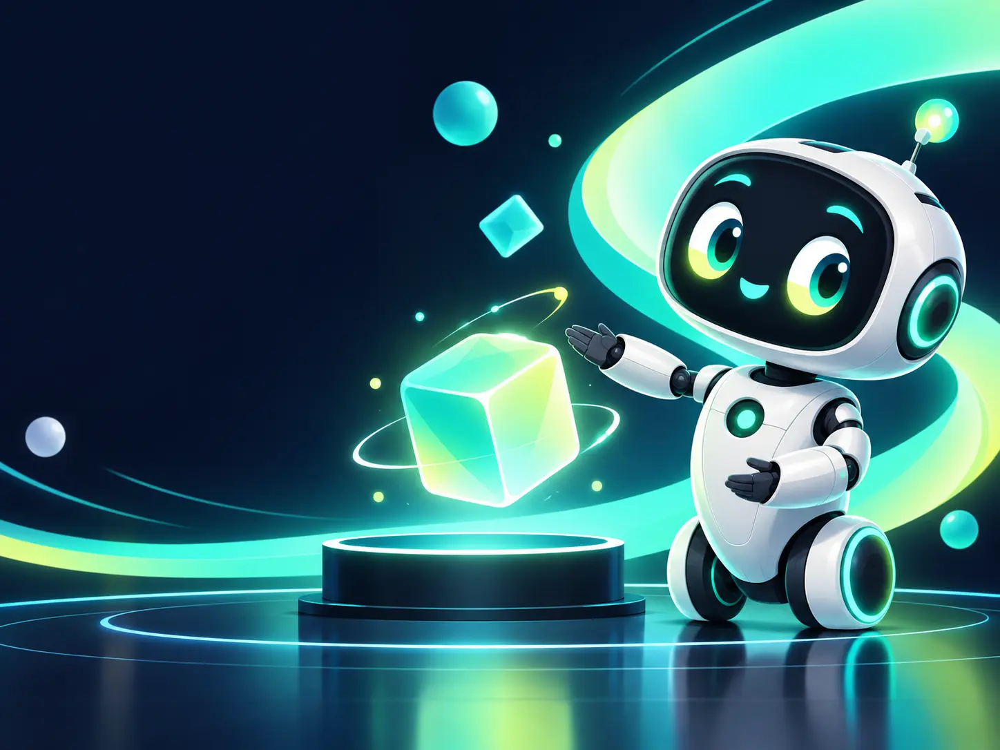
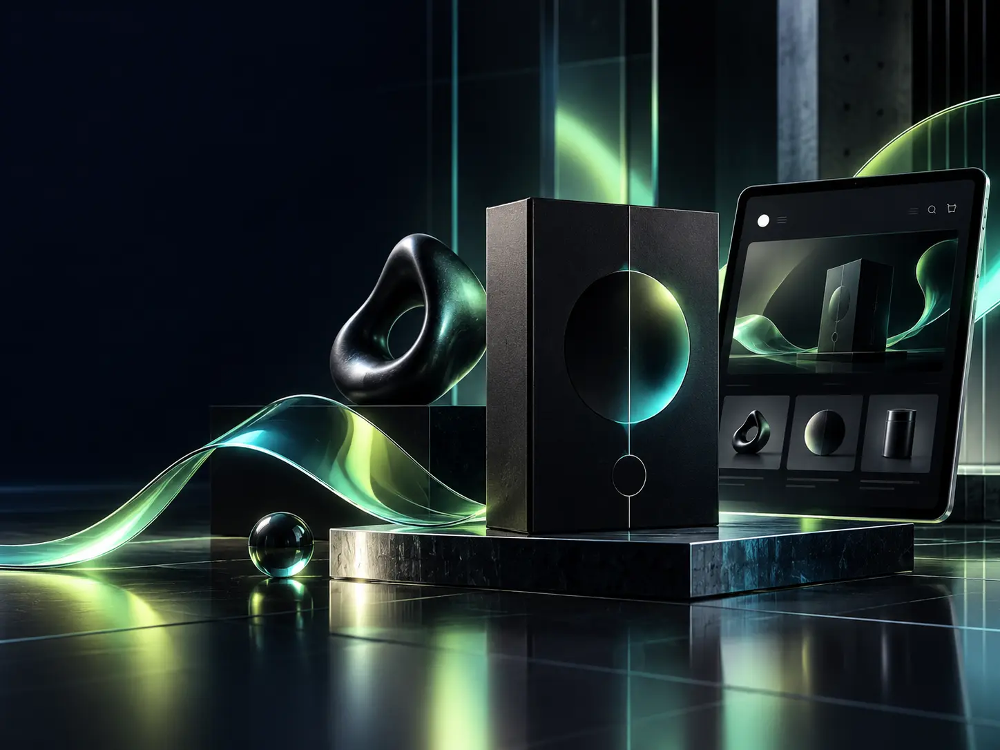
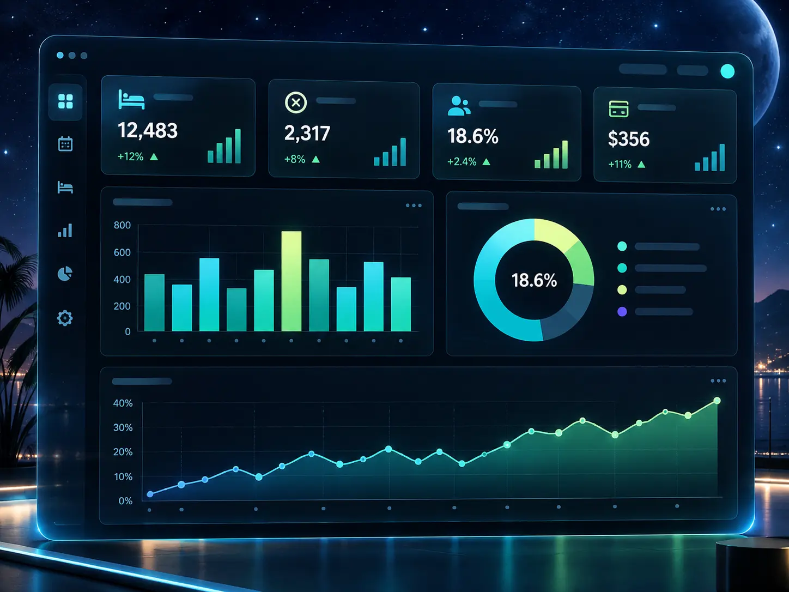

Work thatkeeps moving.
A focused selection of motion, brand and data work. Each piece starts with a message and ends with a clearer way to see it.
Good ideas should move.
The supplied showreel now opens and closes inside the FAANOMATE system: the final lockup, the luminous visual language and the Create. Build. Automate. rhythm carry through the reel.
A little more signal.
Use the filters to find the kind of work you want to see, then open a card to watch or explore it.

Cartroids
A complex product idea turned into a clear, energetic moving story.
WinAds
A focused explainer language for a digital advertising product.

EraOfEcom
A bright, forward-moving brand story designed for attention.
CareToday
A friendlier visual language for services people need to understand.

Hotel Booking Analysis
A large dataset translated into a decision-ready story.
AI Workflow Automation
A visual system for showing where intelligence can remove repetitive work.
Have a message that deserves more movement?
Let us find the visual, digital or intelligent system that can carry it.